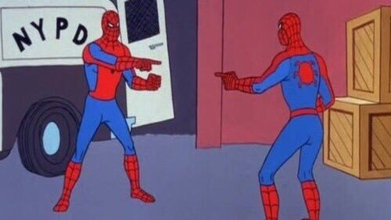

<section id="meme-spiders" style="background:#000">
<h2 class="t nok">В РЕЗЮМЕ У ОБОИХ O(n)</h2>
<p class="meme-label hash" style="left:400px;top:257px;width:600px">unordered_set</p>
<p class="meme-label" style="left:950px;top:257px;width:600px">flat_hash_set</p>

<aside>Обе хеш-таблицы. Только память у них организована по-разному. [пауза 2 с]<br>А для числового ключа есть ещё один кандидат — radix.<br>[→ следующий слайд]<br><br>──────────<br>Источники и условия<br>Шаблон Spider-Man Pointing at Spider-Man: https://magicmeme.com/meme/spiderman-pointing-at-spiderman ; файл https://cdn.magicmeme.com/templates/spiderman-pointing-at-spiderman.png . Изображение персонажей Marvel, не генерация ImageGen. Собственные редактируемые подписи V6. Мем №45. O(n) относится к средней оценке на рассматриваемой задаче, а не ко времени в наносекундах. Сравнение узловой unordered_set и Abseil flat_hash_set на flat.<br></aside>
</section>
